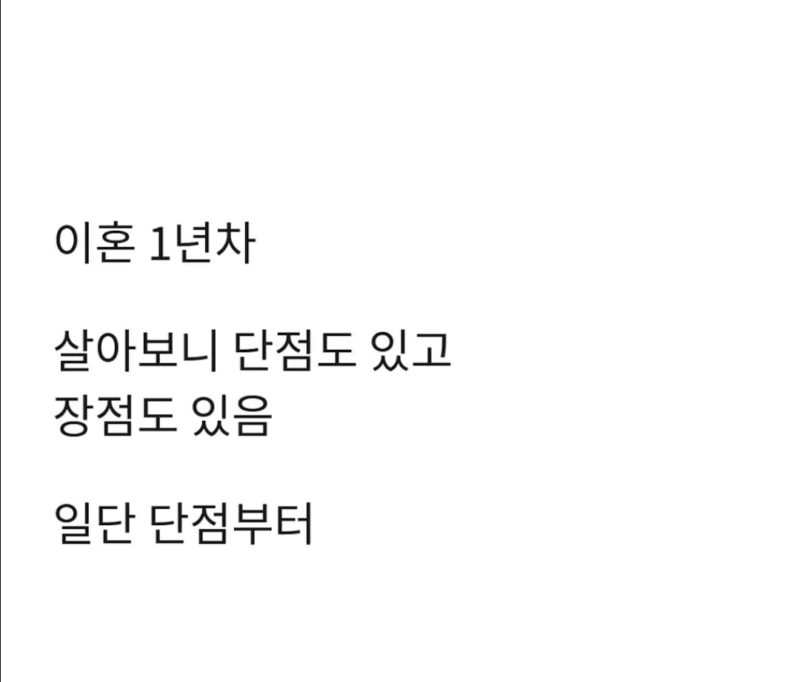
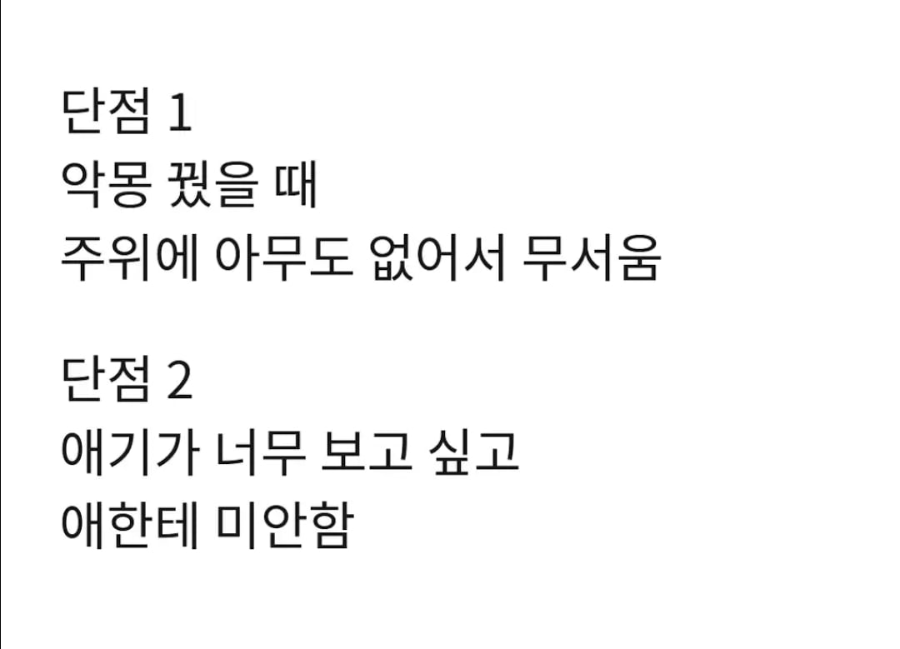
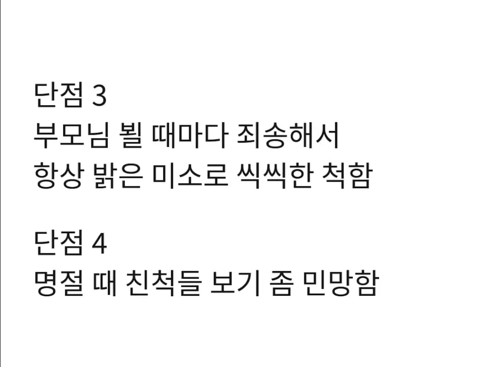
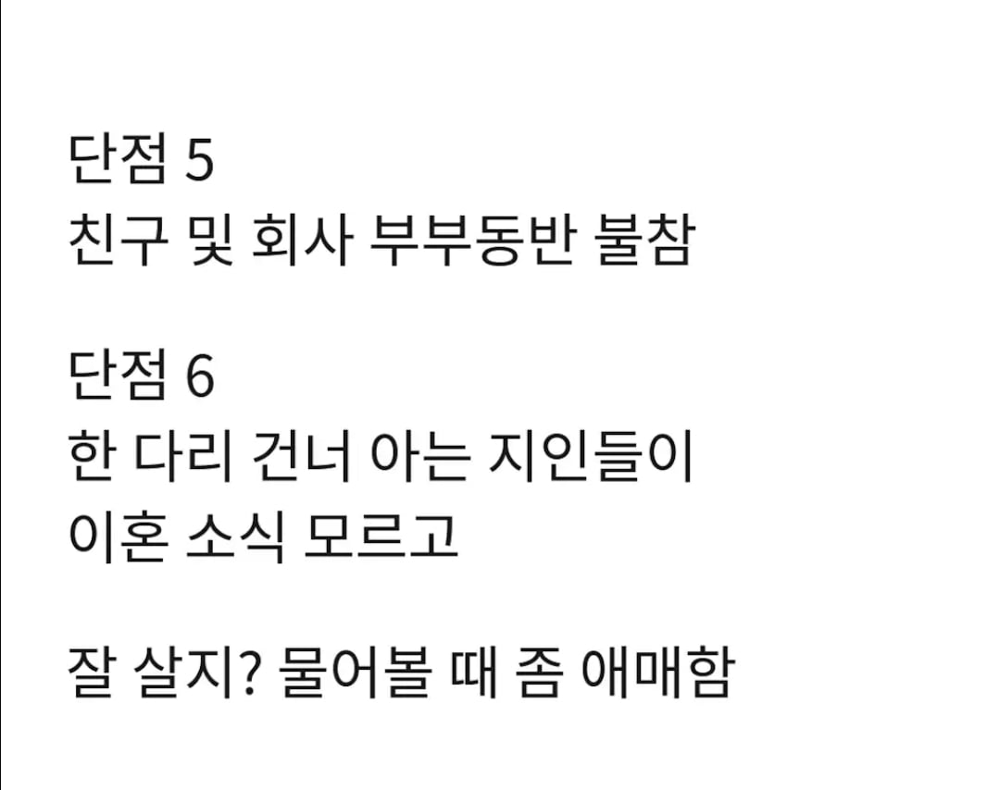
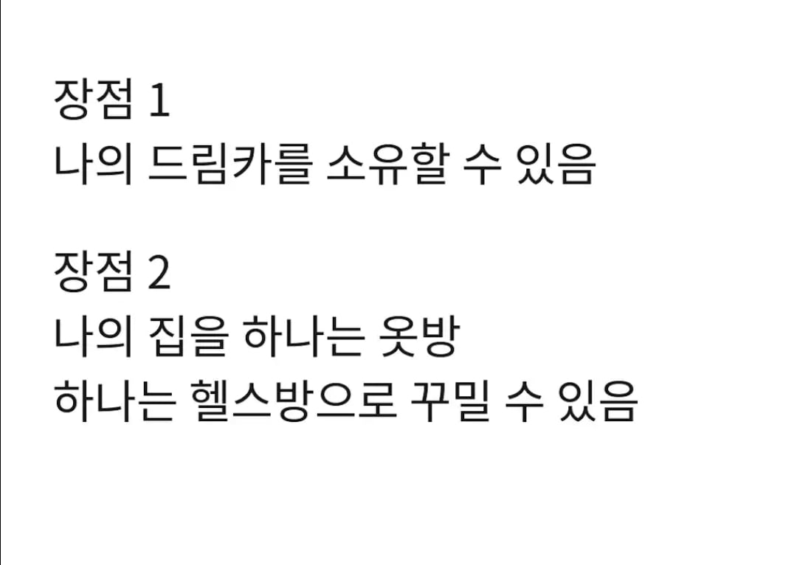
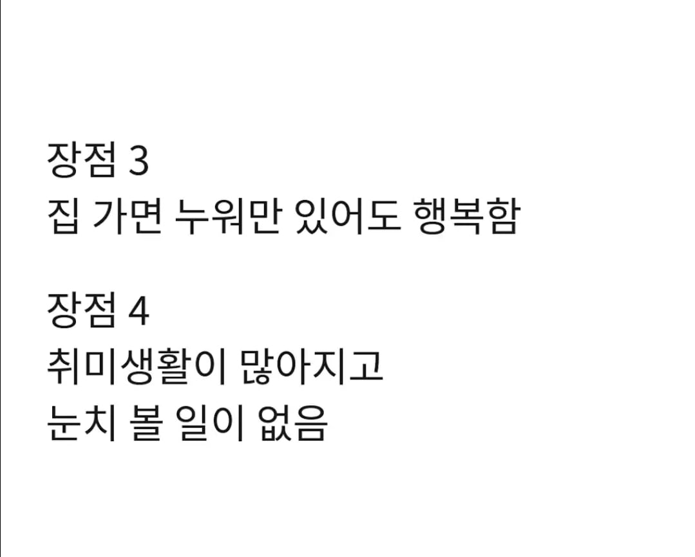
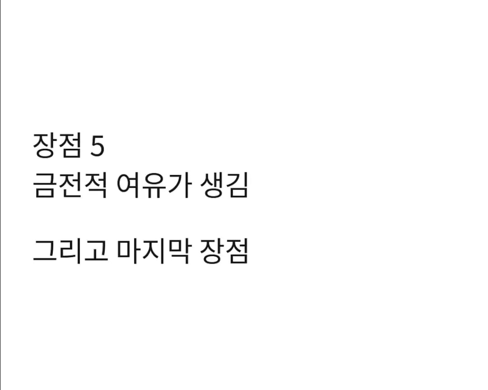
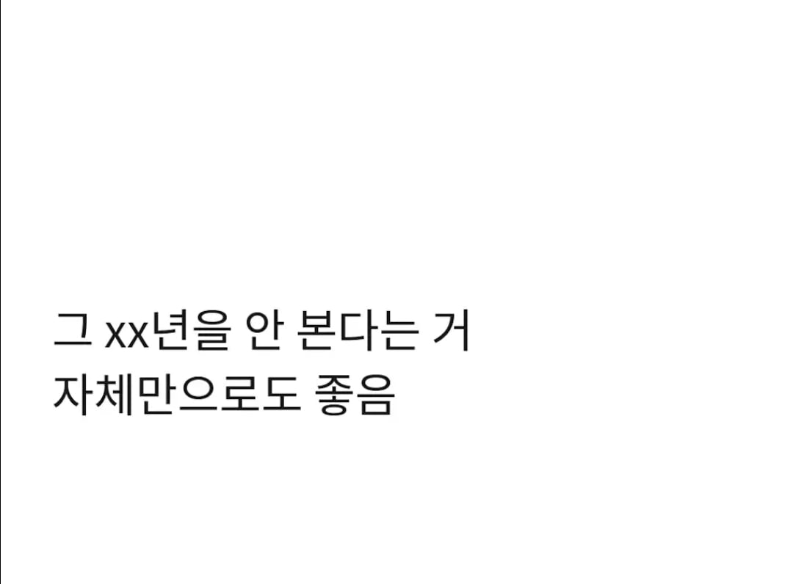

부럽다
막상이혼하니 뭐 없음
그냥 살거같고 모든게 그려려니됨
인간을 안변함. 안맞으면 헤어지는게 옳다. 다음엔 좋은사람 만나면됨
나도 빨리 끝내서 너무 다행이다.
이런거 보면 걍 마음맞는 동성끼리 결혼하게 법제화 해주면 참 좋겠다 싶음
게이게이야
환영한다
외로움, 그거 나중에 커진다....
저 단점나열 한게 사회적 관계문제 들이라 보통일이 아닌데..
어른의 삶 진짜 너무 외롭고 힘든거같아.
결혼을 해도, 안 해도 힘들거같아
이런생각이 들고나니 혹여라도 자식 낳아서 똑같은거 또 반복시키고싶지 않다
좋은 사람만나 결혼해서 좋은점도 많은데 고작 일년 살아보고 이혼한 사람말 듣고 단점부터 보는게 아쉽구만.
이혼한지 6개월 좀 넘었네.
단점2 빼고는 나머지 단점은 공감 안되고, 명절에 친척들도 안만남. 친구들한테는 잘 지내냐고 물어보면 그냥 이혼해서 자취한다고 당당히 얘기함.
장점은 전부 공감. 발끝에서 전기차 600마력 뿜어져나올 때, 쾌감에 가끔 지림.
결혼을 부정하는건 아님. 내가 사람 보는 눈이 성숙하지 못했던 내 탓인거지. 행복하게 살면 장땡임.
타이칸 4s 뽑아써?
??? : 비혼은 이혼으로 완성되는거다! 내가 옳았음을 알 수 있거든!
장점: 나는 좋음
단점: 가족이 슬퍼함